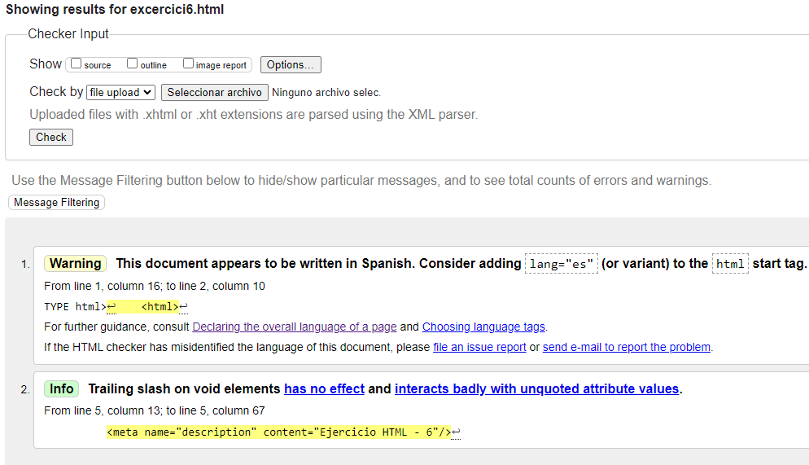

Lista de descripciones
- HTTP
- El protocolo de transferencia de hipertexto (HTTP) es un protocolo o conjunto de reglas de comunicación para la comunicación cliente-servidor. Cuando visita un sitio web, su navegador envía una solicitud HTTP al servidor web, que responde con una respuesta HTTP.
- HTML
- HTML, siglas en inglés de HyperText Markup Language, hace referencia al lenguaje de marcado para la elaboración de páginas web.
- URL
- Una URL (por las siglas en inglés de Uniform Resource Locators) es la dirección web de un recurso de Internet, como una página web, por ejemplo. Puedes ver la URL de la página en la que te encuentras en la barra de direcciones situada en la parte superior de la ventana de tu navegador.
- TCP/IP
- TCP/IP es un protocolo de enlace de datos que se usa en Internet para que los ordenadores y otros dispositivos envíen y reciban datos. TCP/IP son las siglas en inglés de Transmission Control Protocol/Internet Protocol (protocolo de control de transmisión/protocolo de Internet)
- INTERNET
- Red informática de nivel mundial que utiliza la línea telefónica para transmitir la información.
- W3C
- El W3C (World Wide Web Consortium) es un comité que se dedica a implementar tecnologías uniformes en el uso y desarrollo de Internet.
- Mozilla Foundation
- Fundación Mozilla es una organización sin ánimo de lucro dedicada a la creación de software libre. Tiene como misión «mantener la elección y la innovación en Internet». La fundación es conocida por crear el navegador Mozilla Firefox o, simplemente Firefox en la actualidad.

Tornar a pàgina principal